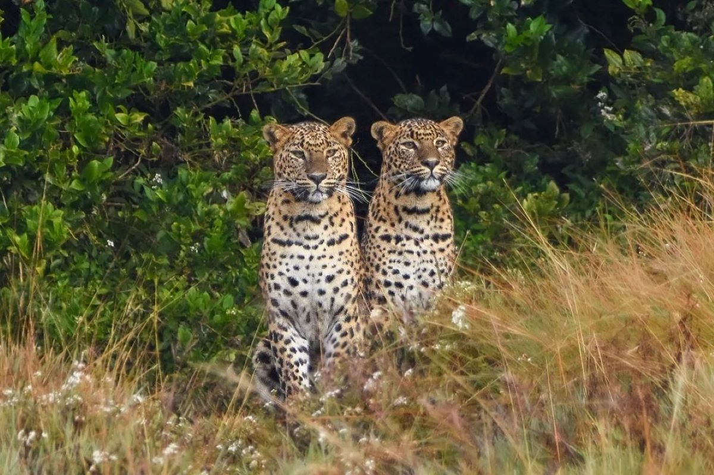
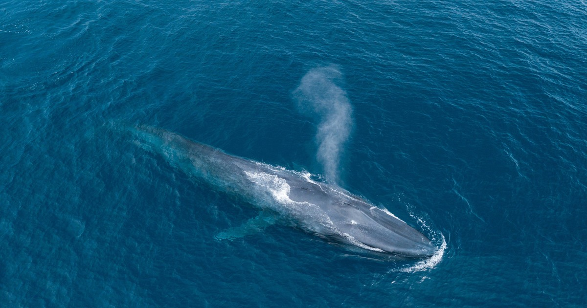

Sri Lanka is home to a diverse range of wildlife, making it a haven for nature lovers and conservationists alike. The island nation's diverse ecosystems, which include coastal regions, arid plains, and lush rainforests, are home to an astounding variety of flora and wildlife. The Asian elephant, which may be seen in national parks like Udawalawe and Minneriya, is one of Sri Lanka's most recognizable inhabitants. The island is also home to the elusive leopard, and one of the best places to see them is in Yala National Park.
With several endemic bird species, including the colorful Sri Lankan Hanging Parrot and the Sri Lanka Junglefowl, Sri Lanka boasts an equally astounding avian biodiversity. Bundala National Park's wetlands draw migrating birds, enhancing the richness of the nation's avifauna. Along the coastlines, there are also plenty of opportunities to see whales and interact with sea turtles due to the abundance of marine life. In order to ensure that future generations can continue to be in awe of Sri Lanka's natural beauty, conservation activities are vital to maintaining this rich tapestry of animals.
For fans and scholars alike, Sri Lanka's marine life is a marine wonderland, with species as varied and fascinating as its terrestrial habitats. The Indian Ocean encircles the island, and a wide variety of marine life can be found in its warm, tropical waters. Sri Lanka is well known for its colorful coral reefs, which are home to a wide variety of fish species and are alive with color. Whales and dolphins, among other marine species, frequently visit the coastal regions, offering fantastic chances for whale watching expeditions.Many kinds of sea turtles, including the critically endangered loggerhead and leatherback turtles, can be found in the waters surrounding Sri Lanka. These turtles lay their eggs on the beaches of the island. Sri Lanka's maritime habitats are beautiful in and of themselves, but they also confront problems like overfishing and coral reef deterioration, which emphasizes the significance of conservation efforts to protect this priceless marine biodiversity for coming generations.
What are the iconic animals to look out for and how to have a close encounter?


Sri Lanka's biggest five are:
Elephants
Sri Lankan Leopard
Sloth Bear
Blue whale
Sperm Whale
Considering its great biodiversity, Sri Lanka is home to a wide variety of iconic species that captivate tourists as well as citizens. The majestic Sri Lankan elephant , highly respected in the island's culture and religion, is one of the most representative animals. In national parks like Yala and Udawalawe, where they are allowed to roam freely in their native habitats, one can see these graceful giants.The elusive leopard ( kotiya), a subspecies unique to the island, is another noteworthy resident. The stunning golden coat of the Sri Lankan leopard, patterned with unique rosettes, serves as an evidence to the nation's efforts to conserve its biodiversity. The rich variety of birds is equally impressive, with the magnificent Sri Lankan junglefowl holding an important spot as the country's national bird. Wildlife enthusiasts and conservationists find refuge in Sri Lanka because of its distinctive animals, which range from the captivating sloth bear to the purple-faced leaf monkey.
The most iconic and surprising is the national animal sri lanka. It is known as the sri lankan giant squirrel otherwise known as the ratufa macroura. This is one of the four largest squirrels in the world. In sri lanka, the giant sqiurel lives in the highlands of the central province and uva province near sri lankas tea country. You can spot them on tree tops because they are known to be arboreal creatures which is why they are rarely spotted on grounds.
What is the best time to visit the wildlife in Sri Lanka?
Given that the island nation has a variety of weather all year round, the ideal time to visit Sri Lanka will mostly rely on the areas you want to see and the experiences you aim to have. December to March are usually seen as the busiest travel season because of the dry, sunny weather that is experienced by the central highlands, west coast, and south coast. This is the perfect season to hike in the hill country, enjoy beach activities, and visit cultural places.
On the other hand, the east coast's dry season runs from April to September, which is an excellent time to travel to locations like Trincomalee and Batticaloa. October and November, during the inter-monsoon season, offer beautiful scenery and few tourists in addition to the possibility of sporadic rains. As the best time of year for wildlife enthusiasts to see marine life is from May to September, this is also the best time to see whales and dolphins along the southern coast.
The ideal time to travel to Sri Lanka largely depends on your interests, including if you value seeing animals, relaxing on the beach, or learning about local culture. When making travel plans, it's a good idea to take into account the varying climates in the various locations to maximize the variety of experiences the nation has to offer.
Here are some of the most visited locations in Sri Lanka:
The Pinnawala (Pinnawala) Elephant Orphanage is situated 90 kilometers from Colombo in the village of Pinnawala in the Kegalle district.The Department of Wildlife gave the orphanage to the National Zoological Gardens in 1978. In 1982, a captive breeding program was started. Here, more than 20 elephants have been bred since the program's start. The orphanage strives to provide these elephants with a natural environment. There are, however, a few exceptions: all of the infants under three years old are still bottle fed by the mahouts and volunteers, and the elephants are bathed twice daily in the river.
The orphanage's main goal has been to give abandoned adult elephants and newborn elephants that are lost in the wild a lifeline. There have been numerous instances where the mother of an orphaned baby elephant has died, or where newborn elephants have fallen into pits and lost out to the herd by accident. In other cases, the mother elephant perished in a pit and left the young elephant alone in the forest. There are cases where farmers have slain adult elephants to safeguard their crops and rice fields, leaving the young elephants orphaned.To provide the unfortunate victims of such circumstances the greatest chance possible, the Pinnawala Elephant Orphanage was established. Pinnawala (Pinnawela) Elephant Orphanage: captive breeding
The orphanage's elephants receive complete support from a team of over 100 workers, including a number of mahouts, and are not subjected to any kind of stress, abuse, or threat.
Elephants can mate because of the herd's freedom of mobility within the orphanage's confined territory. The first infant elephant at Pinnawela was born in 1984. Some of these children are fortunate enough to witness the birth of their third generation at the orphanage today.
International scientists and animal advocates have taken notice of Pinnawala's success tale. Numerous books and scholarly articles about Pinnawala have been released in multiple languages. The Pinnawala herd of elephants has been millions of times photographed, videotaped, and documented by amateurs and thousands of times by professionals. Following their visit to the orphanage, many, if not millions of people have heard Pinnawala's message of conservation.
Hikkaduwa, which is midway between Colombo and Galle, is well renowned for being the greatest place to have the ideal beach vacation. Many are drawn to Hikkaduwa Beach by its enticing seas, which invite them to jump in and partake in exciting water sports. In a similar vein, you might learn how Hikkaduwa recovered from the destructive aftermath of the 2004 Boxing Day Tsunami in numerous different locations throughout the town. Visit Hikkaduwa to take advantage of the sun, sand, surf, and other activities!
The beach known as Hikkaduwa is located on Sri Lanka's southwest coast. About two hours' travel, or 98 kilometers, separates this charming seaside town from Colombo, the country's capital. Located on the Indian Ocean coast, this location provides access to a variety of other attractions in Sri Lanka, such as the ancient city of Galle, renowned for its colonial beauty and fortified old town, making it an ideal beach getaway destination.
Travelers seeking a variety of outdoor pursuits, like as surfing and snorkeling, are drawn to Hikkaduwa. Divers and snorkelers will be awestruck by the coral reef found in Hikkaduwa National Park. The beach also has excellent surfing waves, with spots that are appropriate for both novice and expert surfers.Some visit Hikkaduwa Beach in order to witness the well-known sea turtles that congregate at Sea Turtle Point. These untamed sea turtles swim quite near to the shore, sometimes even running into visitors who wade in to get up close and personal.
The Hikkaduwa Marine National Park is ideally located for scuba diving and coral reef observation. Hikkaduwa is a popular coastal town known for its surfer-friendly waves. With 170 different types of reef fish and 60 different coral species, the biodiversity of the reef is rich. Within the reef, which is made up of coral species from the families Montipora, Faviidae, and Poritidae, one may observe the coral types Staghorn, Elkhorn, cabbage, brain, table, and star collar.